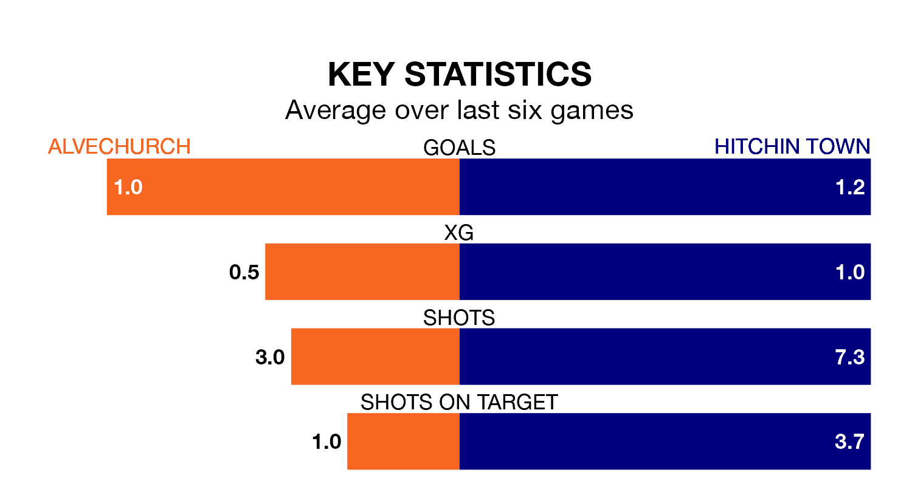

Struggling Alvechurch face Hitchin Town at Lye Meadow on Saturday looking to build on a win in their last league outing.
After securing all three points with a 1-0 victory over AFC Sudbury on January 13, Alvechurch sit 19th in Southern League Premier Central.
They travel to play a Hitchin side eighth in the standings, who lost in their last match, 3-0 against Redditch United, on Monday.
Alvechurch are in bad form in Southern League Premier Central, with one win and a draw from their last six games.
But with no wins and two draws over that period, Hitchin's form is even worse – they have taken two points from 18, compared to the hosts' four.
In the last 10 years, Alvechurch and Hitchin have played each other on 10 occasions. Alvechurch won three of them, Hitchin five, and they drew twice.
On average, Alvechurch scored 1.4 goals and Hitchin 1.7 in those matches.
Their last meeting was on August 5, when Hitchin won 2-0 at home.
With 29 goals in 23 games so far this season, Alvechurch are the league's third-lowest scorers with 1.3 goals per game. And they are conceding more than average, letting in 44 goals at a rate of 1.9 per game.
Town, meanwhile, are above average scorers, with 1.6 goals per game, compared to a league average of 1.5. They have conceded 1.5 goals per game.
Updated: 13:09 (UTC), 17/01/24